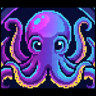
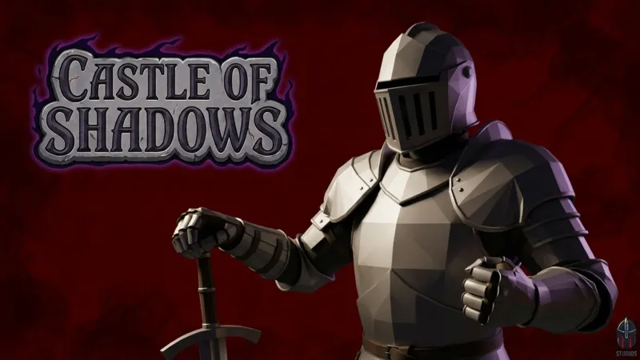
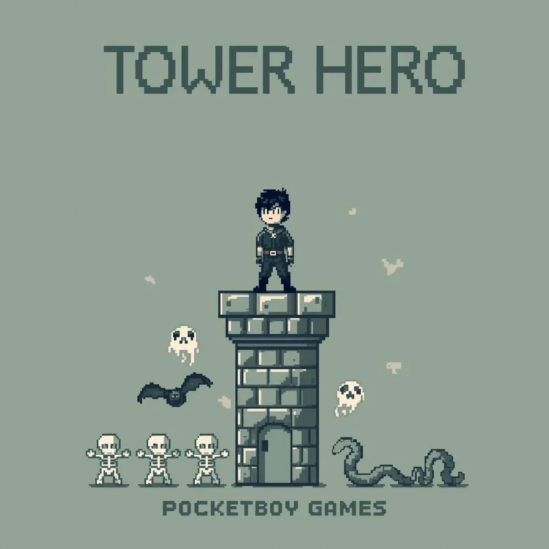

Disponible ahora · Elda, AlicanteAvailable now · Elda, Alicante可立即到職 · 西班牙阿利坎特省埃爾達
Octavio
Gregorio Guerrero
Ingeniero multimedia. Programo, coordino equipos, organizo el trabajo y me preocupo por el producto.Multimedia engineer. I code, lead teams, organise the work and care about the product.多媒體工程師。我寫程式、帶團隊、安排工作，並且在乎產品。
Suelo responder en menos de 24 hI usually reply within 24 h我通常在 24 小時內回覆

- 10 · MHNota del TFG, con mención a Matrícula de HonorThesis grade, with a distinction (Matrícula de Honor)畢業論文成績，並獲最高榮譽（Matrícula de Honor）
- GBRetroDev'25Participante oficial con un juego de Game Boy en Z80Official entry with a Game Boy game in Z80以 Z80 組合語言開發的 Game Boy 遊戲正式參賽
- Motor propioOwn engine自製引擎Castle of Shadows: C++ y OpenGL, coordinando al equipoCastle of Shadows: C++ and OpenGL, leading the teamCastle of Shadows：C++ 與 OpenGL，並帶領團隊
- 2026Graduado en Ingeniería Multimedia (UA)BSc Multimedia Engineering (Univ. of Alicante)多媒體工程學士（阿利坎特大學）
Proyectos elegidosSelected work精選作品
Tres proyectos de los que me siento orgulloso.Three projects I'm proud of.三個讓我引以為傲的專案。

2025–26TFG · InvestigaciónResearch研究10 · MH
Reescalar juegos con IA usando la GPU que nadie usaUpscaling games with AI on the GPU nobody uses用沒人使用的 GPU，以 AI 放大遊戲畫面
Un sistema que captura cada frame del juego y se lo pasa a la GPU integrada para reconstruirlo a resolución completa en tiempo real.A system that grabs every game frame and hands it to the integrated GPU to rebuild it at full resolution in real time.一個擷取遊戲每一幀、交給內建 GPU 即時重建成完整解析度的系統。
Leer el casoRead the case study閱讀案例
2025–26Zero StudiosCoordinador y programadorLead & programmer負責人兼程式設計師
Castle of Shadows
Juego 3D de acción sobre un motor propio. Coordiné al equipo, programé el motor y sacamos el producto adelante.3D action game on an in-house engine. I led the team, programmed the engine and we shipped the product.以自製引擎打造的 3D 動作遊戲。我帶領團隊、撰寫引擎程式，並把產品完成上線。
Leer el casoRead the case study閱讀案例
2025PocketBoyPM y programadorPM & programmer專案經理兼程式設計師
Tower Hero
Un tower defense para Game Boy escrito en ensamblador. Entrada oficial de GBRetroDev'25.A Game Boy tower defense written in assembly. Official GBRetroDev'25 entry.用組合語言寫成的 Game Boy 塔防遊戲。GBRetroDev'25 正式參賽作品。
Leer el casoRead the case study閱讀案例Más proyectosMore projects更多作品
- 2026Blender · OpenSCAD · Bambu Lab A1
3DOCNA En construcciónWork in progress建置中
Mi pequeño negocio de impresión 3D: pedidos personalizados y catálogo propio en PLA, PETG y TPU. Diseño, producción y clientes.My small 3D-printing business: custom orders and an own catalogue in PLA, PETG and TPU. Design, production and customers.我的小型 3D 列印事業：客製訂單與自有商品目錄，使用 PLA、PETG 與 TPU。從設計、生產到客戶都自己來。
-
2025
React · Node · MongoDB
PixelDepot
Gestor de assets para estudios de videojuegos, accesible (WCAG 2.1).Asset manager for game studios, built to WCAG 2.1.為遊戲工作室打造的素材管理平台，符合 WCAG 2.1 無障礙標準。
-
2024
C++
2Dymiros
Juego de cartas en C++ sin motor: turnos, IA básica y estados de partida.Card game in C++ with no engine: turns, basic AI and game states.不使用引擎、以 C++ 開發的卡牌遊戲：回合制、基礎 AI 與遊戲狀態管理。
-
2025
DaVinci Resolve
CortometrajeShort film短片
Rodaje con cámaras profesionales y postproducción completa: montaje y color.Shot on professional cameras, fully post-produced: edit and grade.使用專業攝影機拍攝，完成全部後製：剪輯與調色。
-
2023
Blender
Un interior dentro del Taj MahalAn interior inside the Taj Mahal泰姬瑪哈陵裡的一個室內空間
Modelado e iluminación de día y de noche.Modelling and day/night lighting.建模與日夜打光。
-
2023
Blender
O.V.O., un robot en la LunaO.V.O., a robot on the MoonO.V.O.，月球上的機器人
Modelado, rigging y animación de un robot cuadrúpedo.Modelling, rigging and animating a four-legged robot.四足機器人的建模、綁定與動畫。
-
2023
Python · Blender
Lluvia proceduralProcedural rain程序化雨景
Script en Python que genera una escena de lluvia editable.Python script that builds an editable rain scene.用 Python 腳本生成可編輯的雨景。
Sobre míAbout關於我
Me gradué en Ingeniería Multimedia en la Universidad de Alicante en 2026. Vengo de los videojuegos, pero lo que más disfruto es que un proyecto con mucha gente salga bien.
I graduated in Multimedia Engineering from the University of Alicante in 2026. I come from games, but what I enjoy most is a project with lots of people going well.
我在 2026 年畢業於阿利坎特大學多媒體工程系。我的背景是遊戲，但我最享受的，是看到一個多人合作的專案順利完成。
En casi todos los trabajos en grupo de la carrera acabé coordinando: repartir tareas, marcar un ritmo y decidir qué se recorta cuando no llega el tiempo. Por eso busco puestos de gestión de proyectos tecnológicos sin dejar de tocar código.
In almost every group project at university I ended up coordinating: splitting tasks, setting a pace and deciding what gets cut when time runs out. That's why I'm looking for tech project management roles where I still touch code.
大學裡幾乎每個小組專案，最後都是由我來協調：分配任務、掌握節奏，時間不夠時決定要砍掉什麼。所以我在找的是仍能接觸程式碼的科技專案管理職位。
- 01Organizo antes de programarI plan before I code先規劃，再寫程式Tareas repartidas, ritmos claros y todo el mundo sabiendo qué toca esta semana.Tasks split, a clear pace, and everyone knowing what this week is for.任務分好、節奏清楚，每個人都知道這週要做什麼。
- 02Que salga adelanteShip it first先交付再說Lo importante es entregar; el detalle se pule sobre algo que ya funciona.Delivering comes first; polish happens on something that already works.交付優先；打磨要在已經能運作的東西上進行。
- 03Aprendo lo que haga faltaI learn what the project needs專案需要什麼，我就學什麼De ensamblador Z80 a OpenCL: si el proyecto lo pide, me pongo.From Z80 assembly to OpenCL: if the project needs it, I pick it up.從 Z80 組合語言到 OpenCL：只要專案需要，我就學起來。
HerramientasToolbox工具箱
- LenguajesLanguages語言
- C, C++, JavaScript, Python, Java, PHP, ASM Z80, HTML/CSS
- Game dev
- OpenGL, raylib, Game Boy ASM, Unreal Engine 5, Unity
- Web
- React, Node.js, Express, MongoDB, Angular, Ionic, WordPress
- DatosData資料庫
- MySQL, MongoDB, Oracle DB
- EntornoTooling開發環境
- Git, GitHub, Docker, CI/CD, VS Code, Visual Studio, Android Studio
- 3D y vídeo3D & video3D 與影像
- Blender, OpenSCAD, impresión FDM (Bambu Lab A1)FDM printing (Bambu Lab A1)FDM 3D 列印（Bambu Lab A1）, DaVinci Resolve
- IdiomasLanguages語言
- Español nativo · Inglés avanzado (B2, curso C1)Spanish (native) · English (advanced, B2 + C1 course)西班牙文（母語）· 英文（進階，B2 + C1 課程）
- 2026Grado en Ingeniería MultimediaBSc Multimedia Engineering多媒體工程學士Universidad de Alicante · Escuela Politécnica SuperiorUniversity of Alicante · Polytechnic School阿利坎特大學 · 理工學院
- 2025–26Prácticas y TFG en la EPSInternship & thesis at the EPS在理工學院（EPS）實習與撰寫論文Superresolución con IA en GPU híbrida · 10, Matrícula de HonorAI super-resolution on hybrid GPUs · 10/10 with honours混合 GPU 上的 AI 超解析度 · 滿分 10 分並獲最高榮譽
- 2020B2 de inglésEnglish B2英文 B2EOI Elda · curso de C1 completadoEOI Elda · C1 course completed埃爾達官方語言學校（EOI）· 已完成 C1 課程
- 2018–20Bachillerato TecnológicoHigh school, technology track高中（科技組）Colegio Sagrada Familia, Elda
Lo que me preguntan los entrevistadores en la primera llamadaWhat interviewers ask me on the first call面試官第一通電話會問我的問題
(Por favor, llamadme.)(Please call me.)（拜託打給我。）
¿Cuándo podrías empezar?When could you start?你什麼時候可以開始上班？
YA. Acabo de terminar el grado en 2026 y estoy disponible para incorporarme de inmediato.
NOW. I just finished my degree in 2026 and I'm available to start immediately.
現在！我在 2026 年剛畢業，可以立刻到職。
¿Qué tipo de puesto buscas?What kind of role are you after?你在找什麼樣的職位？
Gestión de proyectos tecnológicos (project manager, producer, coordinación técnica) o desarrollo en cualquier entorno tecnológico. Donde mejor encajo es en un sitio en el que pueda organizar el trabajo del equipo sin perder el contacto con el código ni con las personas.
Tech project management (project manager, producer, technical coordination) or development in any tech environment. I fit best where I can organise a team's work without losing touch with the code — or with the people.
科技專案管理（專案經理、製作人、技術協調），或任何科技領域的開發工作。最適合我的地方，是能讓我安排團隊的工作，同時不脫離程式碼，也不脫離人。
¿Has coordinado equipos de verdad?Have you actually led teams?你真的帶過團隊嗎？
En la carrera, sí, y de forma continuada: en Castle of Shadows (Zero Studios) y en Tower Hero (PocketBoy) coordiné al equipo durante todo el curso: reparto de tareas, prioridades y seguimiento de entregas. En casi todos los proyectos en grupo acabé haciendo ese papel. Aún no lo he hecho en una empresa, y es justo lo que busco.
At university, yes, consistently: on Castle of Shadows (Zero Studios) and Tower Hero (PocketBoy) I coordinated the team for the whole year — task split, priorities and delivery tracking. I ended up in that role in almost every group project. I haven't done it inside a company yet, and that's exactly what I'm looking for.
在大學裡有，而且是持續地帶：在 Castle of Shadows（Zero Studios）和 Tower Hero（PocketBoy）中，我整個學年都負責協調團隊——分配任務、排定優先順序、追蹤交付。幾乎每個小組專案最後都是我擔任這個角色。我還沒在公司裡做過，而這正是我在找的機會。
¿De qué va tu TFG?What was your thesis about?你的畢業論文在做什麼？
Casi todos los ordenadores modernos tienen una GPU dedicada y otra integrada que no se usa. Construí un sistema que le pasa cada frame a la integrada para reescalarlo con IA en tiempo real, sin tocar el juego. Obtuve una nota de 10 con mención a Matrícula de Honor. Aquí lo cuento entero.
Almost every modern computer has a dedicated GPU plus an integrated one that sits idle. I built a system that hands every frame to the integrated GPU to upscale it with AI in real time, without touching the game. It got a 10/10 with honours. Full write-up here.
幾乎每台現代電腦都有一顆獨立顯示卡，還有一顆閒置的內建顯示晶片。我打造了一個系統，把每一幀畫面交給內建 GPU，用 AI 即時放大，完全不需要修改遊戲。成績是滿分 10 分，並獲得最高榮譽（Matrícula de Honor）。完整介紹在這裡。
¿Qué idiomas hablas?Which languages do you speak?你會說哪些語言？
Español nativo desde el lanzamiento del Grand Theft Auto: Vice City e inglés avanzado: tengo el B2 oficial de la EOI y completé el curso de C1. Puedo trabajar, documentar y hacer reuniones en inglés.
Native Spanish since Grand Theft Auto: Vice City came out, and advanced English: I hold the official B2 (EOI) and completed the C1 course. I can work, write docs and run meetings in English.
從《俠盜獵車手：罪惡城市》發售那年開始說母語西班牙文；英文程度進階：持有官方 B2 證書（EOI），並完成 C1 課程。可以用英文工作、撰寫文件和開會。
HablemosLet's talk聊聊吧
Cuéntame qué buscas: un puesto, un proyecto o una duda sobre algo de aquí.Tell me what you're after: a role, a project, or a question about something here.告訴我你在找什麼：一個職位、一個專案，或是對這裡任何內容的疑問。
Escríbeme por emailEmail me寫信給我
Es la forma más rápida. Suelo contestar en menos de 24 h.It's the fastest way. I usually reply within 24 h.這是最快的方式。我通常在 24 小時內回覆。